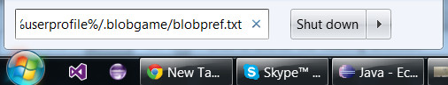
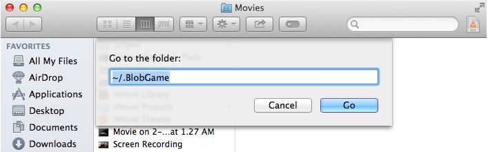

Frequently Asked Questions
- How do I modify my game preferences?
- How do I make the game run faster?
- How do I play with a controller?
How do I modify my game preferences?
Below is the contents of a sample preference file, change a value to 0 to disable a feature, 1 to enable, or set an integer value for width and height. Remember to save after any changes. You can return to the default values by deleting the BlobPref.txt file and running the game.
{
"fullscreen":1,
"height":720,
"width":1280,
"useLights":1,
"vSyncEnabled":1,
"useGL20":1,
"usePreload":1
}
Access the BlobPref.txt file:
Windows:
Click the Start button and enter %userprofile%/.BlobGame/BlobPref.txt into the search box.
Mac:
In Finder, use the shortcut ⇧⌘G and enter ~/.BlobGame to navigate to the .BlobGame folder in your home directory. Then open the blobpref.txt file.
Linux:
In Terminal, enter vim $home/.BlobGame/BlobPref.txt
How do I make the game run faster?
Check if your computer has both integrated graphics and a dedicated graphics card. Make sure that your system is using the dedicated card for Blob Game.
Also try setting fullscreen to 0, playing in a smaller window, and/or setting useLights to 0.
How do I play with a controller?
First, make sure any Bluetooth or USB controller is connected before running Blob Game.
If the game detects a controller, the configure controller button will appear on the main menu screen.
Click this button and follow the instructions to configure your controller. This step only needs to be done once for each type of controller that you are using.